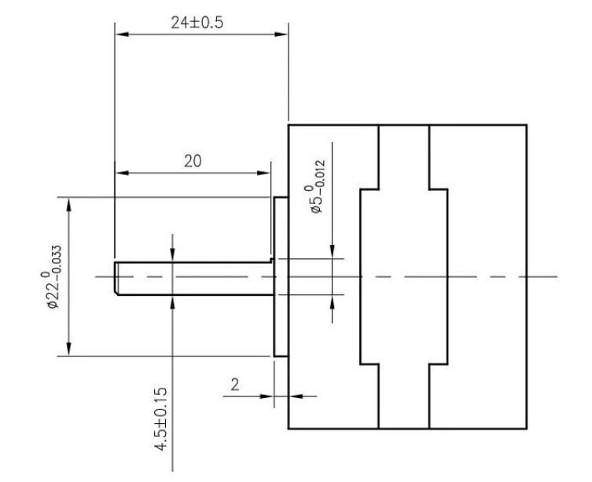
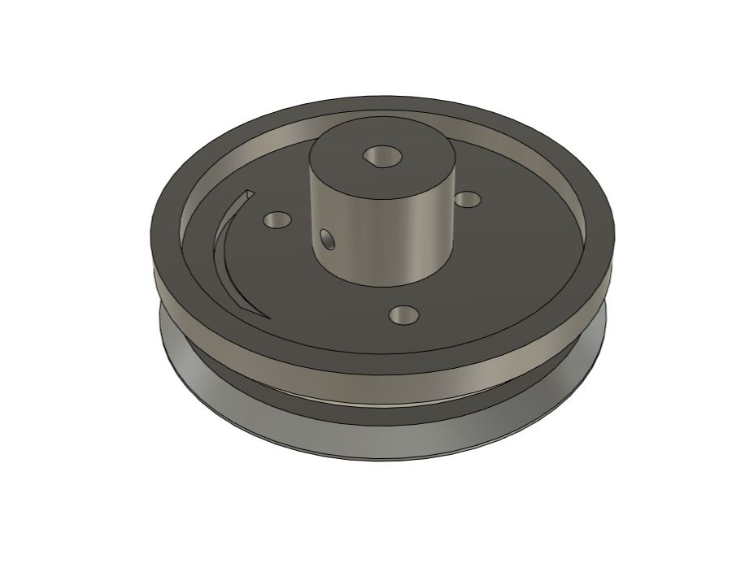
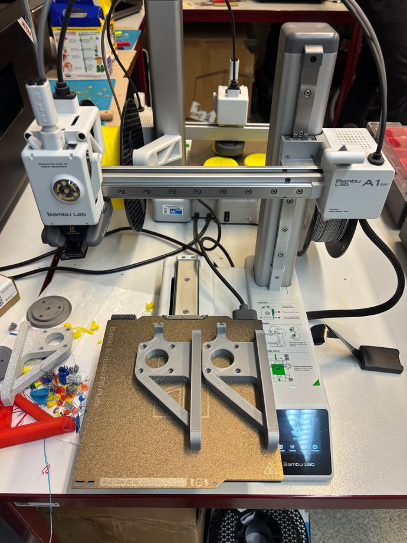
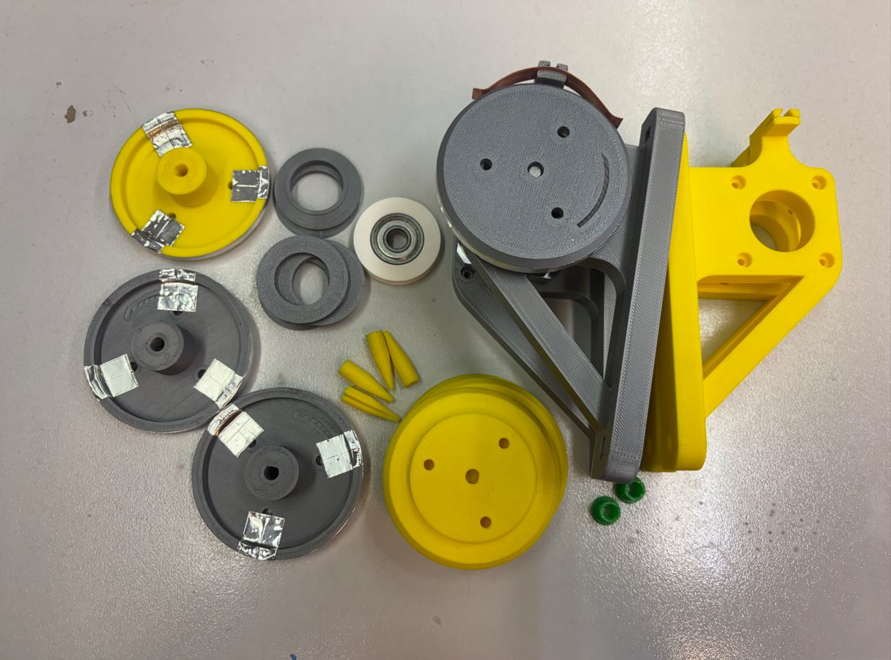
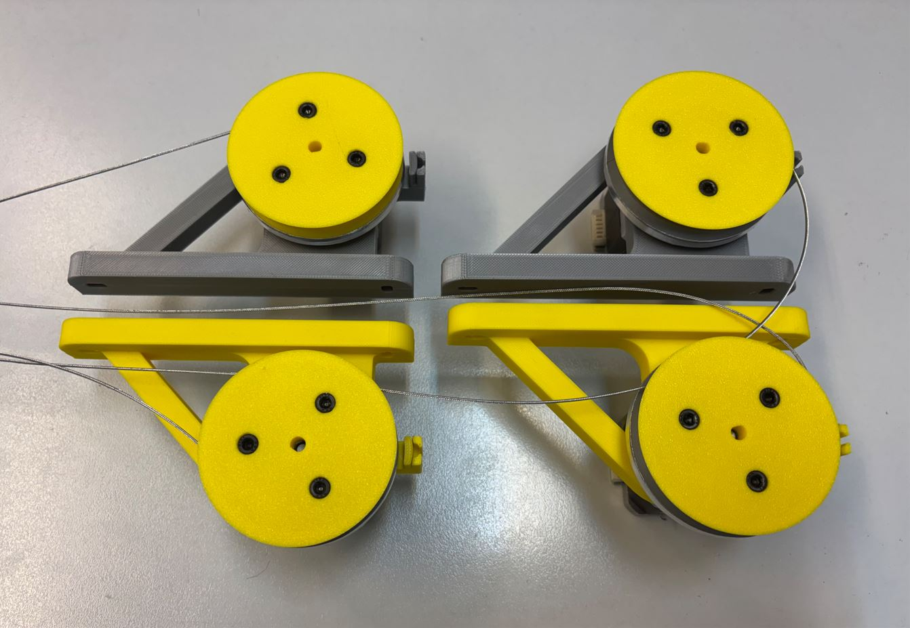
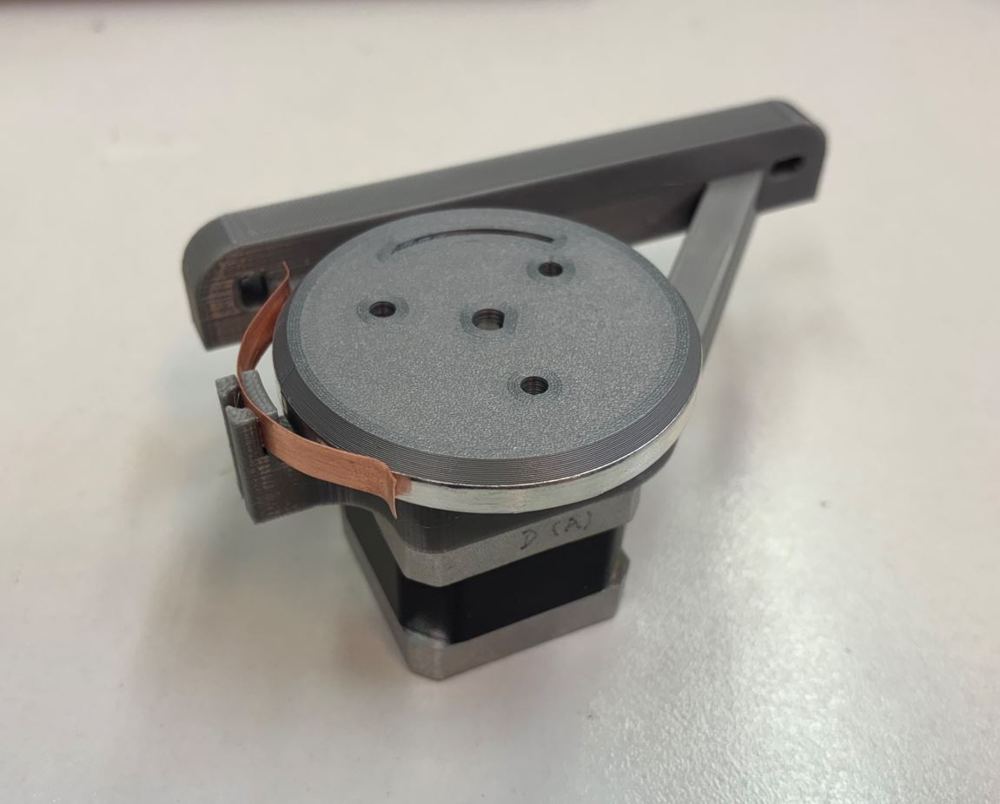

11. a 12. týden: Počítačem řízený stroj Week 11 and 12: Computer-Controlled Machine
Během jedenáctého a dvanáctého týdne bylo úkolem v týmu navrhnout a postavit stroj řízený počítačem. During the eleventh and twelfth weeks, the task was to design and build a computer-controlled machine in a team.
Níže popisuji, jak jsem k našemu stroji přispěl já. Pokud vás zajímá projekt jako celek, nahlédněte do hlavní dokumentace týmu AA. Below I describe how I contributed to our machine. If you are interested in the project as a whole, check out the main documentation of team AA.
Kreslení světlem Light drawing
Rozhodli jsme se vytvořit stroj pro kreslení světlem. Takové zařízení pohybuje světelným zdrojem (např. LED), čímž ve vzduchu vytváří různé vzory a obrazce. Ty se následně zachytí fotoaparátem v režimu dlouhé expozice, který díky delšímu sběru světla zaznamená světelné stopy. We decided to create a light drawing machine. Such a device moves a light source (e.g., LED), creating various patterns and shapes in the air. These are then captured by a camera in long exposure mode, which records the light trails by gathering light over a longer period.

Zvolili jsme obdélníkovou konstrukci se dvěma osami pohybu. Pohyb LED zajistí čtyři navijáky umístěné v rozích konstrukce, které budou synchronně navíjet a odvíjet lanka s uchycenou LED. We opted for a rectangular frame with two axes of movement. The movement of the LED is handled by four winches located in the corners of the frame, which will synchronously wind and unwind cables holding the LED.
Navijáky Winches
Společně s Adamem Pospíšilem jsme dostali za úkol tyto navijáky navrhnout a postavit. Hlavními výzvami byly: zajistit předvídatelné navíjení tuhého ocelového lanka a zároveň přes toto lanko napájet pohyblivou LED. Abychom umožnili přenos elektrického proudu z pevné části na rotující naviják, museli jsme vyrobit vlastní rotační sběrač. Together with Adam Pospíšil, we were tasked with designing and building these winches. The main challenges were: ensuring predictable winding of a stiff steel wire and at the same time powering the moving LED through this wire. To allow the transfer of electrical current from the stationary part to the rotating winch, we had to manufacture our own rotary slip ring.
Jako pohon jsme využili čtyři krokové motory NEMA 17 ve dvou variantách: dva silnější (0,4 Nm) a dva slabší (0,28 Nm). Silnější motory umístíme do horních rohů konstrukce, kde se očekává větší tah lanka při zvedání, zatímco slabší motory přijdou do spodních rohů. Podle hrubých výpočtů by oba typy motorů měly zvládnout požadovanou zátěž i bez nutnosti použití převodů. For the drive, we used four NEMA 17 stepper motors in two variants: two stronger ones (0.4 Nm) and two weaker ones (0.28 Nm). We placed the stronger motors in the upper corners of the frame, where greater cable tension is expected when lifting, while the weaker motors go to the lower corners. According to rough calculations, both types of motors should handle the required load even without the need for gears.
Návrh držáku navijáku Winch mount design
Držák musí být dostatečně pevný, aby unesl hmotnost motoru s navijákem, ale také aby odolal tahu lanka. Ocelové lanko je totiž poměrně tuhé a musí být neustále napínáno dvěma protilehlými navijáky, jinak by hrozilo jeho vymotání. The mount must be sturdy enough to carry the weight of the motor with the winch, but also to withstand the pull of the cable. The steel cable is quite stiff and must be constantly kept in tension by two opposing winches, otherwise it would risk unspooling.
Díly jsme modelovali v programu Fusion 360. Krokové motory se k držáku uchytí pomocí čtyř šroubů M3 × 12 mm. Při návrhu úchytu motoru jsme vycházeli z následujících nákresů: We modeled the parts in Fusion 360. The stepper motors are attached to the mount using four M3 × 12 mm screws. When designing the motor mount, we used the following diagrams as a reference:


Kromě samotného motoru s navijákem ponese držák také měděný plíšek. Ten poslouží jako zmíněný sběrač pro přenos elektrického proudu na navíjející se lanko. Besides the motor with the winch itself, the mount will also hold a copper plate. This will serve as the aforementioned slip ring for transferring electrical current to the winding cable.
Držák se k hliníkovým profilům konstrukce (o průřezu 20 × 20 mm) připevní pomocí dvou šroubů M4. Ty projdou předvrtanými otvory v profilech a na druhé straně se zajistí maticemi. Abychom nebyli zcela závislí na přesnosti vyvrtaných otvorů, navrhli jsme držák s podélnými drážkami pro šrouby. Ty umožní drobný posuv a jemné doladění finální polohy. The mount will be attached to the aluminum profiles of the frame (20 × 20 mm cross-section) using two M4 screws. These will pass through pre-drilled holes in the profiles and be secured with nuts on the other side. So that we wouldn't be entirely dependent on the accuracy of the drilled holes, we designed the mount with longitudinal slots for the screws. This allows for slight movement and fine-tuning of the final position.

Návrh navijáku a sběrače Winch and slip ring design
Při návrhu navijáku jsme museli vyřešit několik překážek. První z nich bylo rovnoměrné skládání lanka. Pro přesné řízení pohybu LED je důležité znát aktuální průměr navijáku, ten se ale s každou nově navinutou vrstvou lanka zvětšuje. When designing the winch, we had to overcome several obstacles. The first was even winding of the cable. For accurate control of the LED's movement, it's important to know the current diameter of the winch, but this increases with every newly wound layer of cable.
Prvním zvažovaným řešením byl naviják ve tvaru dlouhého válce se spirálovitou drážkou, do které by se lanko namotávalo vždy do jedné vrstvy. Takový naviják by ale byl zbytečně velký a tuhé ocelové lanko by se do něj špatně navádělo. Druhou variantou byl naviják s 1 mm širokou a cca 3 cm hlubokou drážkou, kde by každá otočka tvořila novou vrstvu. I v tomto případě by byl naviják velký a navádění lanka do takto úzké štěrbiny by bylo obtížné. The first considered solution was a long cylinder-shaped winch with a spiral groove, where the cable would always wind in a single layer. However, such a winch would be unnecessarily large and the stiff steel cable would be hard to guide into it. The second option was a winch with a 1 mm wide and approx. 3 cm deep groove, where each turn would form a new layer. In this case as well, the winch would be large, and guiding the cable into such a narrow slit would be difficult.
Nakonec jsme se rozhodli pro naviják s drážkou širokou 3,2 mm a hlubokou 1 cm. Do jedné vrstvy se tak bezpečně vejdou tři otočky lanka. Softwarovou kompenzaci zvětšujícího se průměru vyřešíme na základě experimentálního zjištění, kolik otoček se průměrně do jedné vrstvy vejde. In the end, we decided on a winch with a groove 3.2 mm wide and 1 cm deep. This safely fits three turns of cable in one layer. We'll solve the software compensation for the increasing diameter based on experimental findings of how many turns on average fit into a single layer.
Vnitřní průměr navijáku jsme stanovili na 4,5 mm, což je dostatečně velké na to, aby se kolem něj dalo tuhé lanko ohnout. Pro snazší navádění lanka jsme okraje drážky navijáku zkosili. Konec lanka se provléká otvorem z drážky až na zadní stranu navijáku, kde je zajištěn třemi šroubky. Tyto šroubky navíc slouží ke spojení obou polovin navijáku k sobě. We set the inner diameter of the winch to 4.5 mm, which is large enough to allow the stiff cable to bend around it. For easier cable guidance, we chamfered the edges of the winch groove. The end of the cable is threaded through a hole from the groove to the back of the winch, where it's secured with three screws. These screws also serve to join the two halves of the winch together.
Po vnějším obvodu navijáku nalepíme hliníkovou lepicí pásku, kterou přehneme přes hranu až pod zmíněné tři šroubky. Ty tak přitlačí ocelové lanko k hliníkové fólii, čímž se vytvoří vodivé spojení. Na držák se následně upevní měděný plíšek (široký 7,5 mm a dlouhý 6 cm) ohnutý tak, aby zvenčí na dvou místech pružně doléhal na hliníkovou pásku. Along the outer circumference of the winch, we stick aluminum adhesive tape, folding it over the edge and under the three mentioned screws. These will press the steel cable against the aluminum foil, creating a conductive connection. A copper plate (7.5 mm wide and 6 cm long) is then mounted onto the bracket, bent so that it flexibly presses against the aluminum tape from the outside in two places.
Naviják se pak připevní k hřídeli krokového motoru pomocí šroubku M3 a závitové vložky. The winch is then attached to the stepper motor shaft using an M3 screw and a threaded insert.



3D tisk 3D printing
Hotové modely jsme z Fusionu 360 vyexportovali do formátu 3MF (přes Utilities -> 3D print) a připravili pro tisk v programu Bambu Studio. Jelikož jsme měli k dispozici převážně jen zbytky různých filamentů, tiskli jsme z materiálů PLA a PETG o různých barvách. Tisk probíhal na školní 3D tiskárně Bambu Lab A1 Mini s 0,4 mm tryskou s následujícím nastavením: We exported the finished models from Fusion 360 to the 3MF format (via Utilities -> 3D print) and prepared them for printing in Bambu Studio. Since we mostly had leftover bits of various filaments available, we printed from PLA and PETG materials in different colors. The printing was done on the school's Bambu Lab A1 Mini 3D printer with a 0.4 mm nozzle with the following settings:
- Profil: 0,20 mm Standard @BBL A1M Profile: 0.20 mm Standard @BBL A1M
- Nozzle temperature (teplota trysky): 210 °C pro PLA, 240 °C pro PETG Nozzle temperature: 210 °C for PLA, 240 °C for PETG
- Bed temperature (teplota podložky): 65 °C pro PLA, 70 °C pro PETG Bed temperature: 65 °C for PLA, 70 °C for PETG
- Wall loops (perimetry): 4 Wall loops: 4
- Sparse infill density (hustota výplně): 25 % Sparse infill density: 25 %
- Sparse infill pattern (vzor výplně): Gyroid Sparse infill pattern: Gyroid
- Outer wall speed (rychlost vnější stěny): 100 mm/s Outer wall speed: 100 mm/s
Zbylá nastavení jsme ponechali na výchozích hodnotách vybraného tiskového profilu. We left the remaining settings at the default values of the selected printing profile.
Pro otvory zapuštěných hlaviček šroubků, které drží pohromadě naviják, bylo nutné využít podpěry. Nastavili jsme je následovně: For the countersunk screw head holes that hold the winch together, we had to use supports. We configured them as follows:
- Type (typ): Tree (auto) Type: Tree (auto)
- Top Z distance (mezera v ose Z): 0,25 mm Top Z distance: 0.25 mm
Ostatní parametry podpěr zůstaly výchozí. Other support parameters remained at their defaults.


Během tisku se objevil problém s nekvalitně vytištěnými převisy u navijáku. Hrubý povrch zasahoval i do míst, kam se měla lepit hliníková páska, kde je potřeba dokonale rovný podklad. Tato místa jsme proto zabrousili brusným papírem a zbývající problémové díly jsme raději vytiskli na tiskárně Prusa při poloviční rychlosti. During printing, an issue arose with poorly printed overhangs on the winch. The rough surface extended into the areas where the aluminum tape was to be applied, which required a perfectly flat base. Therefore, we sanded these areas with sandpaper and chose to print the remaining problematic parts on a Prusa printer at half speed.

Sestavení Assembly
Ve spěchu jsem bohužel nechal vytisknout všechny navijáky stejné, ačkoliv měly být v zrcadlově převrácených párech. Ve dvou dílech bylo tedy nutné vyvrtat nový otvor pro protažení lanka. In a rush, unfortunately, I printed all the winches exactly the same, although they should have been in mirrored pairs. It was therefore necessary to drill a new hole in two parts for the cable to pass through.


Jelikož pájecí hrot pro instalaci závitových vložek nebyl dostatečně dlouhý, bylo třeba být kreativní. Vložku jsem zčásti prošrouboval a hrot páječky jsem přikládal ke šroubku, který přenášel teplo k vložce. Since the soldering tip for installing the threaded inserts was not long enough, it was necessary to be creative. I partially screwed in the insert and applied the soldering iron tip to the screw, which transferred the heat to the insert.

Následně se navijáky odmastily isopropylalkoholem a Adam je polepil hliníkovou fólií. Subsequently, the winches were degreased with isopropyl alcohol and Adam covered them with aluminum foil.




Sběrač vznikl z měděného plíšku, který byl nejdřív kancelářskými nůžkami rozstřižen podélně na dvě poloviny široké 7,5 mm a následně nastříhán na délku 6 cm. The slip ring was made from a copper plate, which was first cut lengthwise with office scissors into two halves 7.5 mm wide, and then cut to a length of 6 cm.

Zhodnocení a možná vylepšení Conclusion and possible improvements
Ačkoliv navijáky nakonec fungovaly poměrně spolehlivě, narazili jsme na několik problémů. Náš odhad, že motory zvládnou zátěž bez převodů, se ukázal jako nepřesný. Při nižších rychlostech a menším napětí lanek systém funguje, ale pokud lanka více napneme (pro omezení kývání LED) a zvýšíme rychlost, motory začnou přeskakovat kroky. Řešením by bylo motory zpřevodovat, například v poměru 1:3. Druhým problémem je rychlé opotřebení našeho DIY sběrače. Měděný plíšek podléhá korozi a ztrácí vodivost, zatímco hliníková páska se kvůli neustálému tření drolí na jemný prach. Pro dlouhodobý a spolehlivější chod by proto bylo lepší nahradit toto řešení kvalitním komerčním sběračem. Although the winches ultimately worked quite reliably, we encountered a few shortcomings. Our assumption that the motors could handle the load without gears proved to be inaccurate. At lower speeds and lower cable tension, the system works fine, but if we increase the tension (to minimize the LED swinging) and the speed, the motors start skipping steps. An ideal solution would be to gear down the motors, for example with a 1:3 ratio. The second issue is the rapid wear and tear of our DIY slip ring. The copper plate corrodes and loses conductivity, while the aluminum tape crumbles into a fine dust due to constant friction. For long-term and more reliable operation, it would therefore be better to replace this solution with a high-quality commercial slip ring.
Mé vedlejší činnosti My secondary activities
Kromě práce na navijácích jsem se podílel na: Besides working on the winches, I also contributed to:
- sestavení Fusion návrhů ostatních členů týmu do jedné finální sestavy, assembling the Fusion designs of other team members into a single final assembly,
- 3D tisku ostatních dílů, 3D printing other parts,
- pájení dlouhých kabelů krokových motorů, soldering the long stepper motor cables,
- různých dalších maličkostech. various other small tasks.